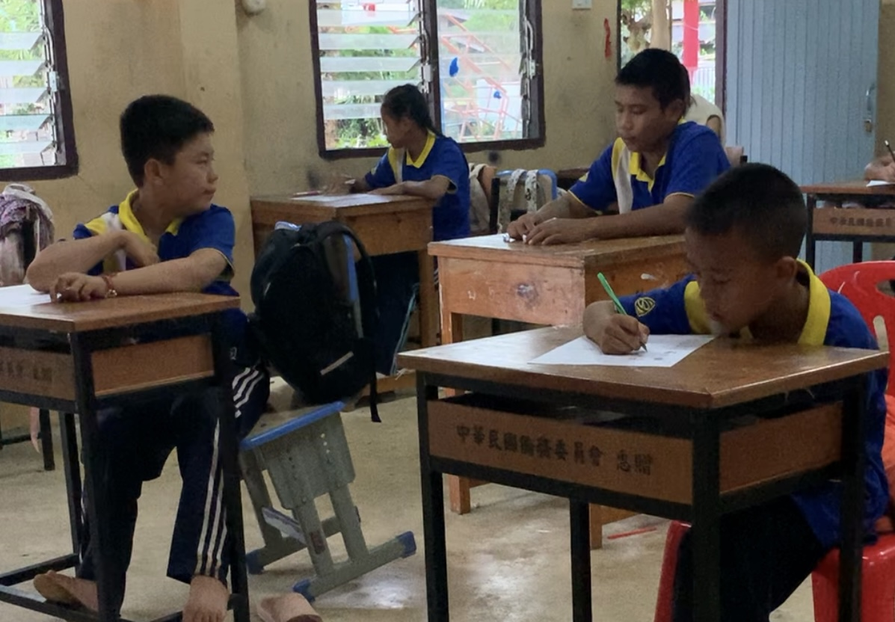
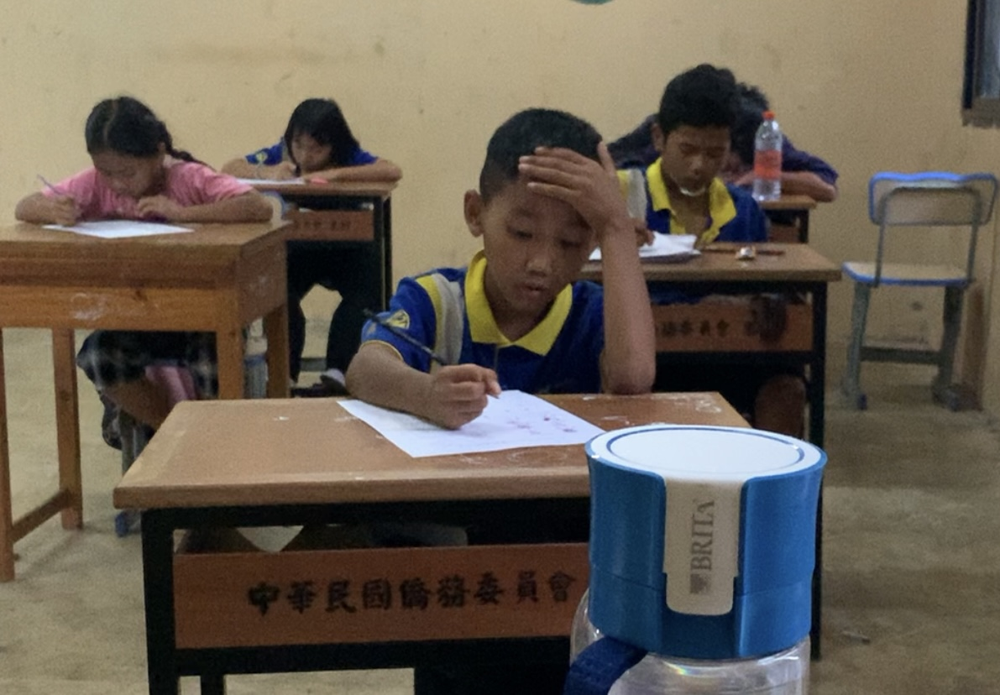
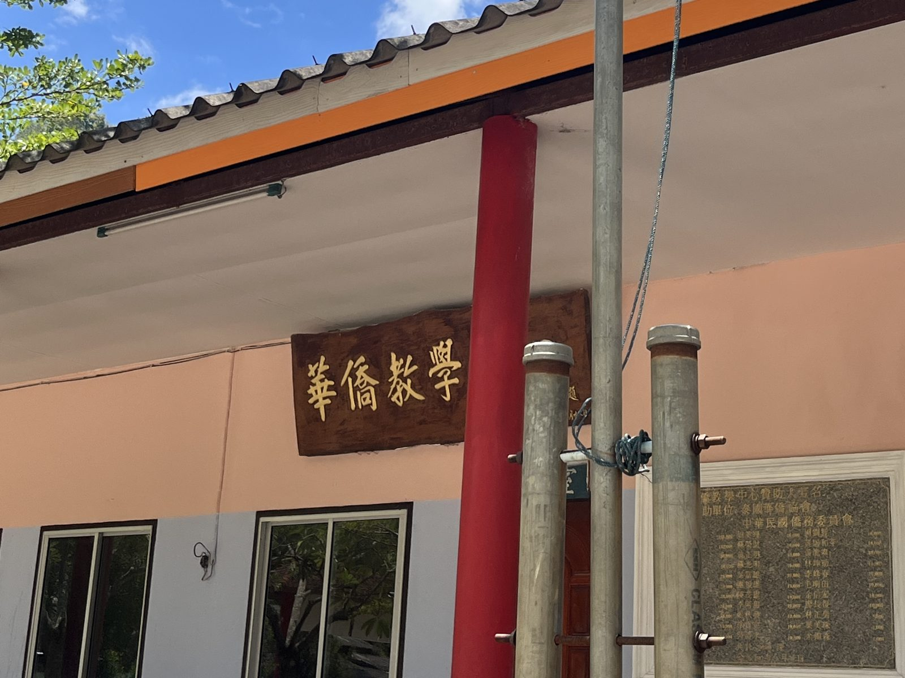

獨立專題｜概念原型
AI 教學模擬器
從泰北志工教學經驗出發的概念原型：目前可以體驗語音輸入、學生表情切換與基本教學建議，其餘功能是規劃中的方向。
專案動機與教學現場
本專案靈感來自我曾於泰北國小擔任志工教師的經驗。
當時觀察到學生常因語言隔閡、害羞，或教師準備不足而缺乏有效互動。
為了幫助未受訓的志工教師在出發前就能模擬練習，我設計這套整合 AI 的教學模擬器。
我也是第一次擔任老師，沒有教學經驗，所以想用情境假設的方式，看看自己面對學生反應時的處理能力。


功能模組介紹
語音輸入模組
結合瀏覽器語音辨識 API，自然捕捉教師語句進入互動流程。
學生反應模擬
透過圖片切換模擬學生理解、困惑與驚訝的整體表情反應。
教學建議與語氣分析
根據語句特徵與語氣關鍵詞提供基本教學建議，未來可整合 LLM。
期待發展方向
以下功能目前尚未實作，預計作為後續擴充方向，讓模擬器更具 AI 智能與實用價值。
表情自動分析（MediaPipe）：透過整合 MediaPipe 臉部特徵點偵測模組，將可即時讀取學生表情狀態，替代圖片模擬，提升互動真實性與反饋即時性。
LLM 智能教學語句回應：預計導入大型語言模型（如 ChatGPT 或 Gemma），提供語意理解與語氣建議回饋，強化語言表達與教學策略精煉。
語調語速統計與教師成長分析：記錄每次語音輸入的長度、語速與鼓勵型用詞比例，建立教師成長曲線，支援自我教學反思與成效評估。
模擬器展示區
本模擬器為「語音輸入 × 學生反應模擬 × 教學建議分析」的整合展示版本，透過說一句話，即可體驗整體互動流程。
使用說明
Step 1：點下方開始語音按鈕，對畫面說出一段教學語句。
Step 2：觀察畫面中學生模擬圖像隨之切換（表情變化）。
Step 3：下方即時顯示 AI 回饋語氣建議與語句分析。

學生模擬表情圖片素材取自 Freepik，僅供教學示意使用。